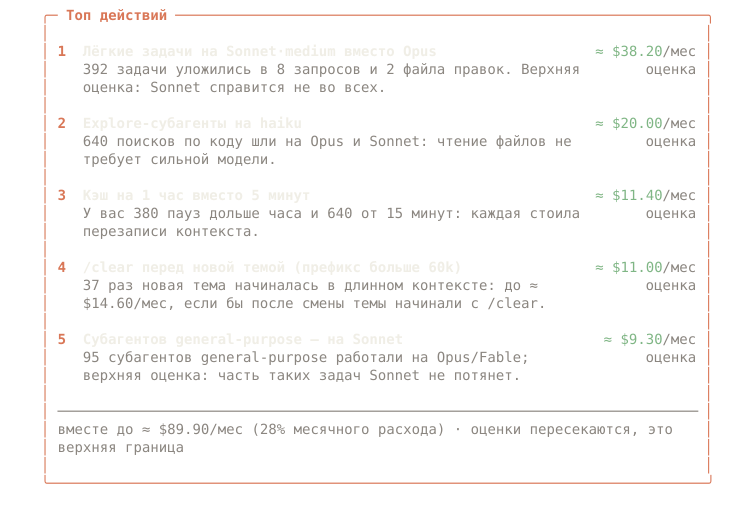
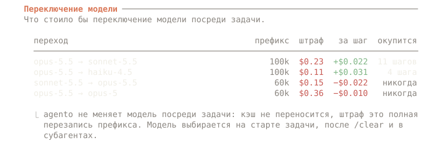

альфа · открытый код · Apache-2.0 · Claude Code ≥ 2.1.287
◆ agento
Тратьте меньше бюджета Claude Code без потери качества.
«System 1» для Claude Code. Подбирает модель на старте задачи, отдаёт дешёвую работу дешёвым субагентам, передаёт план от Opus к Sonnet в чистом контексте и останавливает агентов, которые ходят по кругу. Всё считается в долларах или в процентах недельного лимита, на вашей машине.
Аудит читает локальные транскрипты и ничего никуда не отправляет. · Бенчмарки →
$ npx agento-cc audit расход · корзины · кэш · TTL · задачи · субагенты · настройка · …

$
01 Проблема
Счёт — это в основном кэш промптов, а не вывод инструментов.
Claude Code на каждом шаге отправляет весь разговор целиком. Кэш промптов делает каждое перечитывание дешёвым, но в масштабе агента именно перечитывания и записи в кэш составляют большую часть счёта. Поэтому «экономить токены» здесь значит совсем не то, что кажется.
44% — запись в кэш, 35% — чтение из кэша. Output — 10%, вывод инструментов и чтение файлов — около 6%.
Независимое исследование на SWE-bench, arXiv 2607.12161Кэш не переносится между моделями, поэтому контекст 100k записывается заново: $0.25 вместо чтения за $0.02. Sonnet экономит около $0.02 за шаг, так что смена окупается через ~10 шагов — если Sonnet справится не хуже.
Прайс Opus 5.5 / Sonnet 5.5 на 2026-10-05В том же исследовании один компрессор поднял итоговую стоимость на 48%, другой — на 6.8%. Сжатый контекст ломал якоря правок, агенты перечитывали файлы, а каждый лишний шаг заново читает весь префикс.
То же исследование; agento меряет доллары за решённую задачуПоэтому agento экономит там, где кэш трогать дёшево
- В чистой точке. Первый промпт, после
/clearили компакции, после того как кэш остыл. Модель, выбранная здесь, не стоит перезаписи. - В субагентах. У каждого свой кэш, поэтому модель выбирается свободно: Haiku — читать и искать, Sonnet — писать чётко описанный кусок кода.
- Через effort, а не модель. На Opus 5.5, Sonnet 5.5 и Fable 5.1 effort меняется без потери кэша. Thinking оплачивается как output.
- Убирая мёртвый контекст. Новая тема в разговоре на 120k перечитывает эти 120k на каждом шаге.
/clearэто прекращает.

02 Как работает
Решить один раз на задачу. Дальше не мешать.
agento — плагин Claude Code с хуками внутри процесса. На старте задачи он спрашивает «System 1» — встроенные правила или небольшую обученную модель, — хватит ли более дешёвой конфигурации. Внутри задачи главную модель он не трогает: распределяет субагентов, следит за зацикливанием и ведёт учёт. Подробно о механике →
Строка статуса
Модель и effort, сколько потрачено и тёплый ли ещё кэш главного потока. Если включить автопилот, его выбор приходит вместе с кнопкой отмены.
◆ agento · opus·high · $1.84 · cache ● 41m ◆ agento · sonnet·med · 7d 63% · cache ● 41m на подписке: недельный лимит вместо долларов ────────────────────────────────────────────────────────────◆ agento: sonnet·medium для этой задачи Автопилот в чистой точке (смена бесплатна для кэша); было opus·max. Причина: слова лёгкой задачи ×2. Вернуть opus·maxВыключить автопилотOK
Одна подсказка на старте задачи
Лёгкая задача на Opus с effort max получает подсказку с кнопкой, причиной и оценкой. Автопилот может применить её сам; по умолчанию он выключен.
> исправь опечатку в заголовке README ────────────────────────────────────────────────────────────◆ Похоже на лёгкую задачу Для такой задачи хватит sonnet·medium (сейчас opus·max). Причина: слова лёгкой задачи ×2, короткий запрос (35 симв.). Смена в начале задачи дёшева: кэш пуст или ещё мал. ≈ −$0.40 на такой задаче · оценка SonnetEffort mediumОставитьНе предлагать
План на Opus, код на Sonnet
Архитектуру обсуждаете с Opus в plan mode. Когда план одобрен, код пишет Sonnet в чистом контексте, где есть только план.
◆ План одобрен План сохранится в .agento/plans/, Sonnet начнёт с контекстом ~8k вместо 112k. ≈ −$1.10 на такой задаче · оценка Писать код на Sonnet — чистый контекстПродолжить на OpusНе предлагать
Панель /agento
Сколько потрачено (факт), сколько сэкономили механизмы agento (всегда с пометкой «оценка»), подсказки, буксование и какой классификатор активен.
◆ agento · сессия 1h12m mode: balanced ────────────────────────────────────────────────────Расход $6.71 факт кэш hit 94% · ● warm 41m Модели opus ▇▇▇▇░░░░░░ 31 sonnet ▇▇▇▇▇▇▇▇▇▇ 84 Экономия ≈ $2.12 (субагенты $1.30 · подсказки $0.82) оценка Подсказки 4 показано · 2 принято · 1 «не предлагать» Буксование 1 (тест падает уже 3-й раз: auth.spec) Классификатор rules-v1 · локально ────────────────────────────────────────────────────РежимОркестр: выклАвтопилот: выкл
Макеты собраны из настоящих строк плагина; суммы условные.
03 Начать
Две команды. Первая ничего не меняет.
Запустить аудит
Расход, промахи кэша и их причины, лёгкие задачи на дорогих моделях, субагенты, мёртвый контекст, настройка. Нужен Node ≥ 20.
$ npx agento-cc audit $ npx agento-cc audit --since all --md report.md
Добавить в Claude Code
Claude Code ≥ 2.1.287. Подсказки включены, автопилот выключен, главная модель посреди задачи не меняется.
> /plugin marketplace add <owner>/agento > /plugin install agento@agento > /agento
Обучить свой System 1
Разметить свою историю судьёй на своём GPU, дистиллировать маленького ученика и запустить его локально. Если что-то пойдёт не так, плагин вернётся к правилам.
04 Принципы
Правила, которые agento не нарушает.
Не менять модель посреди задачи
Главная модель меняется только в чистой точке и только через видимый вам выбор. Внутри задачи экономия идёт через субагентов и передачу плана.
Не выше вашего выбора
agento не поднимает модель или effort выше выбранных вами. Ваша конфигурация — потолок стоимости.
Ничего молча
У каждой подсказки есть причина и оценка. Каждое автоматическое действие видно, отменяемо и отключаемо.
Fail-open
При ошибке или таймауте agento Claude Code работает так, как будто плагина нет.
Доллары, а не токены
Расход помечен «факт», экономия — всегда «оценка». Единица измерения — стоимость решённой задачи.
Все семь принципов с примерами: Как работает.
05 Что аудит нашёл у меня
Месяц одного пользователя, а не бенчмарк.
Автор прогнал agento audit и конвейер обучения на своих 30 днях работы в Claude Code: один пользователь на подписке, 408 сессий, 71 511 запросов, всё по прайсу API. Здесь нет измеренной экономии: только куда ушли деньги и что, по мнению судьи, можно было сделать дешевле.
Запись в кэш — 19%, output — 15%, некэшированный ввод — около 0%. Кэш hit — 99.2%. Счёт — это длинный контекст, который перечитывается на каждом шаге.
аудит автора · API-эквивалентClaude Opus прочитал 560 законченных задач на Opus/Fable и решил, что 303 из них справились бы Sonnet или Haiku.
мнение судьи по законченным задачам, не повторный прогонНа 34 задачах, которые автор разметил вручную, судья Opus совпал в 50% случаев и недооценил задачу в 41%. Поэтому метки судьи не используются как есть.
n = 34 · подробнее в бенчмарках06 Обучить свой System 1
История показывает ваш выбор, а не потребность.
У активного пользователя почти всё в истории выполнено на Opus с высоким effort, и модель, которая учится повторять этот выбор, выучит «всегда Opus». Поэтому метки в agento контрфактические: самая дешёвая конфигурация, которая справилась бы не хуже. Их дают судья, ваша собственная ручная разметка и, где это по карману, повторные прогоны.
- dataset buildЗадачи из локальных транскриптов, признаки и слабые метки; секреты вычищены.
- judge · labelСудья на любом OpenAI-совместимом сервере (vLLM на вашем GPU) читает законченные задачи; часть вы размечаете вручную — это золото.
- учитель LayaДообучается на GPU-сервере. С ноутбука уходит только очищенный датасет и только на ваш сервер.
- ученик e5-small
multilingual-e5-small, ONNX: 35 мс p50 на CPU, 279 МБ. - agento-brainЛокальный демон на unix-сокете. Любая ошибка или нет ответа за 400 мс — решают правила.
opus-v1, для выбора модели проверку не прошёл, поэтому здесь он только подсказывает; головы plan_first и delegate_explore пригодны (результаты). Инструкция для GPU.07 Приватность
Ваш код остаётся на вашей машине.
Ни телеметрии, ни аккаунта. На этом сайте тоже нет трекеров.
agento auditи плагин работают локально. Промпты, код и статистика не покидают вашу машину.- Классификатор локальный. Правила работают внутри процесса, обученный ученик — в
agento-brainна unix-сокете. - Обучение — по желанию и туда, куда укажете вы. Судья обращается к серверу, который вы назвали;
trainотправляет только очищенный датасет на ваш GPU-сервер. Ваши данные никогда не попадут в публичные веса. - Будущий облачный классификатор будет только по явному согласию и будет получать только сжатые признаки.
08 Тарифы: предварительно
Сегодня бесплатно и локально. Платные тарифы — только план.
- Аудит, плагин, учёт, подсказки, передача плана, защита от зацикливания
- Правила или ваш обученный ученик, на CPU
- Весь конвейер обучения
- Облачный учитель на GPU: точнее, чем ученик на CPU
- Только по согласию и только сжатые признаки
- Командные отчёты
- Учитель у себя (Docker) для команд, которым нельзя отправлять промпты наружу
Это не обещание: платные тарифы могут измениться или не появиться вовсе. Локальная версия останется бесплатной и открытой.
09 Вопросы
Частые вопросы
Работает ли на подписке Pro/Max?
Да. На подписке за токены не платят, но заканчивается недельный лимит. Аудит показывает суммы в API-эквиваленте, плагин — недельный лимит в строке статуса, а после калибровки на вашей истории формулирует подсказки как «≈ −0.6% недельного лимита». Калибровка — эмпирическая оценка, так она и подписана.
Отправляет ли он мой код куда-нибудь?
Нет. Аудит и плагин читают локальные файлы и работают локально. Сетевой трафик есть только у обучения, которое вы запускаете сами: судья, которого вы направили на сервер, и train, который отправляет очищенный датасет на ваш GPU-сервер.
Будет ли он менять модель посреди задачи?
Никогда. Смена посреди задачи переписывает весь кэш (+$0.23 на контексте 100k). Главная модель меняется только в чистой точке: первый промпт, после /clear или компакции, после того как кэш остыл. Автопилот по умолчанию выключен; включённый, он держит дешёвую конфигурацию только для одной задачи и никогда не запускает /model, который поменял бы и вашу модель по умолчанию.
А если он ошибётся?
Подсказку можно проигнорировать одним нажатием, а «Не предлагать» отключит этот тип подсказок для проекта. Выбор автопилота приходит с кнопкой [Вернуть opus·max]. agento не поднимается выше вашего выбора, защита от зацикливания замечает застрявшего агента, а любая ошибка просто выключает его вмешательство. Обученная модель ставится, только если недооценивает не больше чем в 5% отложенных задач; первая не прошла, поэтому выбор модели она только подсказывает.
Сколько это стоит?
Ничего: Apache-2.0. Правила и локальный ученик не делают запросов к API. Разметка истории судьёй немного стоит, если судья — claude, и ничего на вашем сервере vLLM. Повторные прогоны тратят настоящий лимит, запускаются только вами и принимают --budget-usd.
Сколько он мне сэкономит?
Пока не знаем и придумывать цифру не будем. Запустите аудит: он покажет верхнюю границу на вашей истории. Открытый бенчмарк — стоимость решённой задачи против always-Opus, opusplan и роутеров на правилах — в дорожной карте.